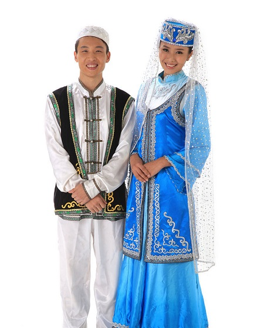

回族

回族是回回民族的简称，是中国人口较多的一个少数民族，总人口981.68万人（2000年，不包括台湾省），
当代回族通用汉语，不同地区持不同方言。关于回族分布总体上看，主要表现为“大分散，小聚居”的格局。
因为信仰伊斯兰教，回族每年主要过三个重大节日，即开斋节、古尔邦节和圣纪节，节日均以伊斯兰教历计算。
回族的族源可以追溯到唐代，学术界一般认为回族大致形成于明代，而元代是回族形成的准备时期，
明代是回回民族最终形成的时期。回族人民具有反压迫斗争的光荣传统，各地回族还以不同的形式参加反抗帝国主义侵略的斗争，
五四运动和中国共产党成立，为回族人民的彻底解放指明了方向。
不论在政治、经济、文化上，回回民族在历史上都涌现过不少杰出的人物，对当时人民生活和生产建设都作出了积极的贡献。